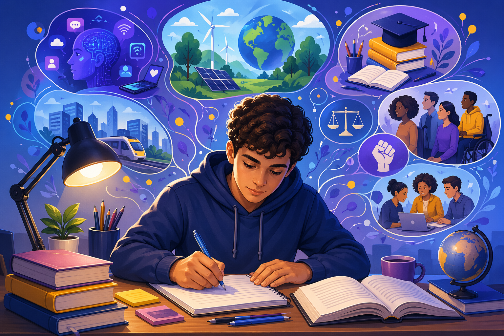

10 Possíveis Temas para a Redação do ENEM 2026 – Análise Completa e Estratégias
Dando continuidade ao seu material, agora vamos aprofundar um dos aspectos mais importantes para um bom desempenho no ENEM: a preparação para a redação. Neste guia completo, você encontrará 10 possíveis temas, acompanhados de análises aprofundadas, contextualização social e caminhos argumentativos que podem ser decisivos na construção de um texto nota 1000.
O objetivo é desenvolver seu repertório sociocultural e sua capacidade crítica, permitindo que você esteja preparado para diferentes abordagens temáticas, independentemente do tema escolhido pela banca.

Contexto dos temas contemporâneos no ENEM
A redação do ENEM tradicionalmente aborda problemas sociais relevantes, exigindo do candidato não apenas domínio da norma culta, mas também uma leitura crítica da realidade. Os temas geralmente estão ligados a direitos humanos, cidadania, tecnologia, educação e desigualdades.
Além disso, espera-se que o estudante apresente uma proposta de intervenção viável, respeitando valores éticos e sociais. Por isso, compreender os principais debates contemporâneos é fundamental para desenvolver argumentos consistentes.
Os temas a seguir foram selecionados com base em tendências sociais, recorrência em provas anteriores e relevância no cenário atual.
Possíveis temas de redação com análise aprofundada
1. Os desafios da saúde mental na sociedade contemporânea
A saúde mental tornou-se uma das principais preocupações do século XXI, especialmente diante do aumento significativo de transtornos como ansiedade, depressão e síndrome de burnout.
Esse cenário está diretamente relacionado ao ritmo acelerado da vida moderna, à pressão por produtividade e à influência das redes sociais na construção da autoestima.
- Impacto das redes sociais na saúde emocional
- Estigmatização dos transtornos mentais
- Falta de políticas públicas eficazes
- Importância da educação emocional nas escolas
2. O impacto das tecnologias nas relações humanas
A tecnologia transformou profundamente a forma como os indivíduos se comunicam, criando novas possibilidades de interação, mas também novos desafios sociais.
Embora facilite a conexão entre pessoas distantes, o uso excessivo pode gerar isolamento, superficialidade nas relações e dependência digital.
- Relações superficiais mediadas por telas
- Dependência tecnológica
- Equilíbrio entre mundo digital e real
- Benefícios da conectividade global
3. A persistência da desigualdade social no Brasil
A desigualdade social é um problema histórico e estrutural no Brasil, com raízes profundas em processos como a escravidão e a concentração de renda.
Mesmo com avanços sociais, grande parte da população ainda enfrenta dificuldades no acesso a direitos básicos como educação, saúde e moradia.
- Heranças históricas da desigualdade
- Desigualdade educacional e econômica
- Exclusão social
- Políticas públicas de inclusão
4. Os desafios da educação no Brasil
A educação é um dos principais pilares para o desenvolvimento social, mas ainda enfrenta diversos obstáculos no país.
Problemas como falta de infraestrutura, desvalorização docente e desigualdade entre redes de ensino comprometem a qualidade educacional.
- Evasão escolar
- Desigualdade entre ensino público e privado
- Uso da tecnologia na educação
- Valorização dos professores
5. A crise ambiental e a responsabilidade coletiva
As questões ambientais ganharam destaque global devido ao avanço das mudanças climáticas e à exploração intensiva dos recursos naturais.
O debate envolve tanto a responsabilidade individual quanto a atuação de governos e grandes empresas na preservação do meio ambiente.
- Desmatamento e impactos ambientais
- Consumo sustentável
- Responsabilidade corporativa
- Educação ambiental
6. O combate à desinformação na era digital
A disseminação de informações falsas, conhecida como fake news, tornou-se um dos maiores desafios da sociedade contemporânea.
Esse fenômeno pode influenciar decisões políticas, comportamentos sociais e até mesmo questões de saúde pública.
- Educação midiática
- Responsabilidade das plataformas digitais
- Impactos sociais da desinformação
- Checagem de fatos
7. A valorização da diversidade cultural no Brasil
O Brasil é marcado por uma rica diversidade cultural, resultado da mistura de diferentes povos e tradições.
No entanto, ainda há preconceito e desvalorização de culturas indígenas, afro-brasileiras e regionais.
- Preconceito cultural
- Globalização e homogeneização cultural
- Preservação de tradições
- Papel da educação na valorização cultural
8. Os desafios da inclusão social de pessoas com deficiência
A inclusão de pessoas com deficiência ainda enfrenta diversas barreiras, tanto físicas quanto sociais.
A falta de acessibilidade e o preconceito dificultam a plena participação desses indivíduos na sociedade.
- Acessibilidade urbana
- Inclusão no mercado de trabalho
- Combate ao capacitismo
- Políticas públicas inclusivas
9. A cultura do cancelamento e seus impactos sociais
A cultura do cancelamento refere-se à prática de excluir socialmente indivíduos por atitudes consideradas inadequadas, principalmente nas redes sociais.
Esse fenômeno levanta debates sobre liberdade de expressão, justiça social e os limites da punição coletiva.
- Julgamentos virtuais
- Consequências psicológicas
- Limites da liberdade de expressão
- Importância do diálogo
10. O papel da juventude na transformação social
A juventude tem se destacado como protagonista em movimentos sociais, políticos e culturais, impulsionando mudanças significativas na sociedade.
No entanto, os jovens também enfrentam desafios como falta de oportunidades e acesso limitado à educação de qualidade.
- Engajamento político
- Ativismo digital
- Desafios da juventude brasileira
- Educação como ferramenta de transformação
Possível tese para redação
Os principais desafios da sociedade contemporânea, como desigualdade social, impactos da tecnologia e crises ambientais, evidenciam a necessidade de ações coletivas e políticas públicas eficazes, sendo fundamental o papel da educação na formação de cidadãos críticos e atuantes.
Conclusão
A preparação para a redação do ENEM exige não apenas domínio da escrita, mas também compreensão aprofundada dos problemas sociais contemporâneos.
- Ampliação do repertório sociocultural
- Desenvolvimento do pensamento crítico
- Capacidade de argumentação consistente
- Elaboração de propostas de intervenção
Ao estudar esses temas, você estará mais preparado para enfrentar diferentes propostas de redação e construir um texto coeso, crítico e bem fundamentado.
Explore Outros Conteúdos
Continue seus estudos acessando outras seções do site Mestre Kira: